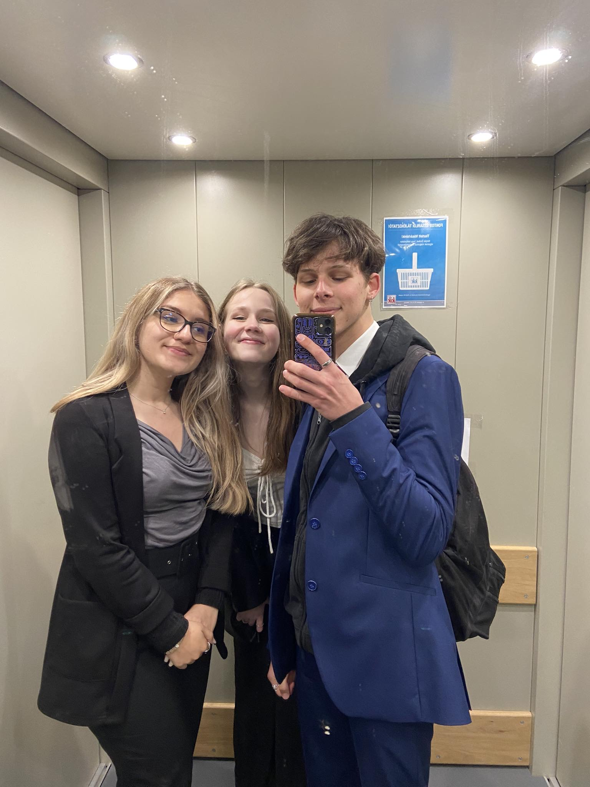
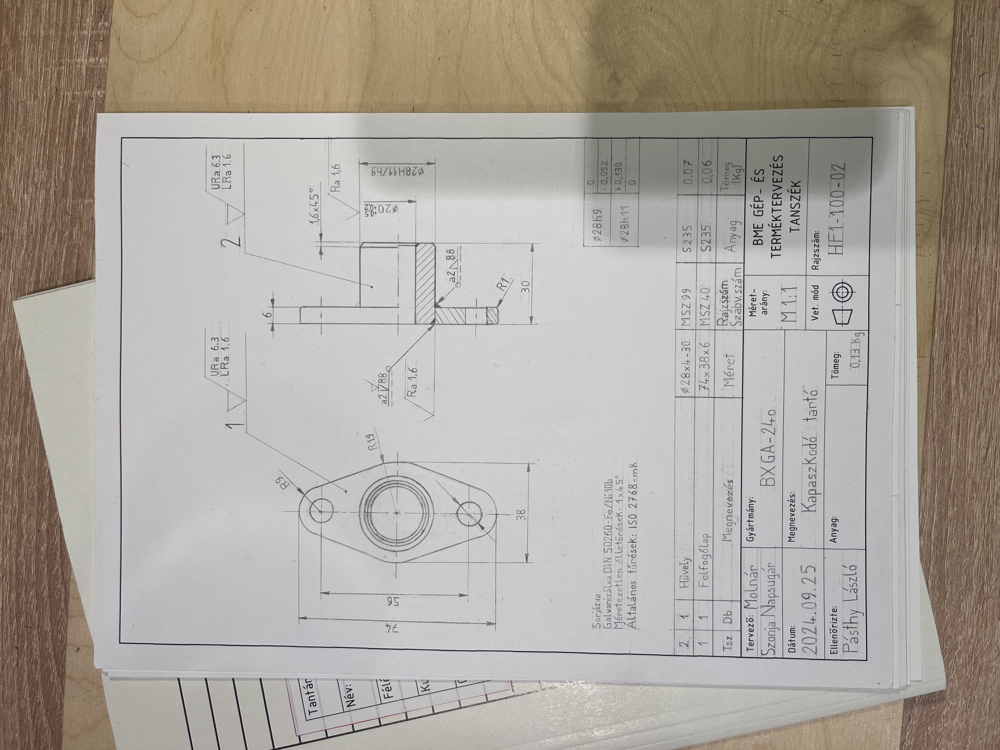
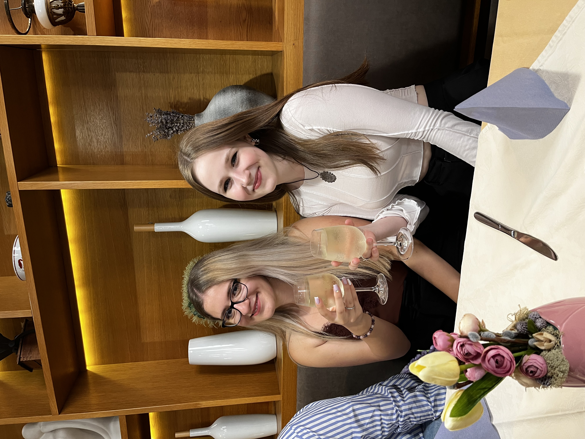
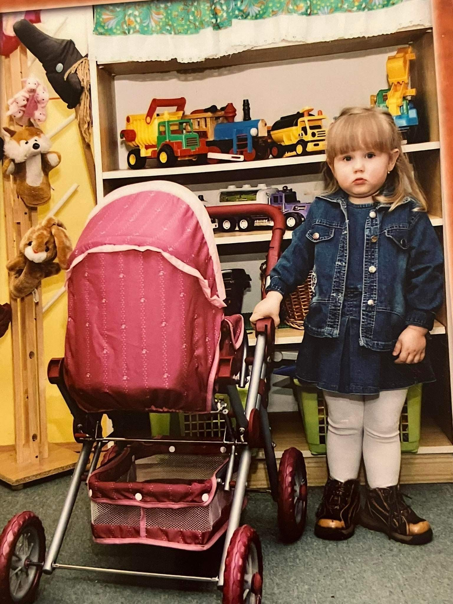
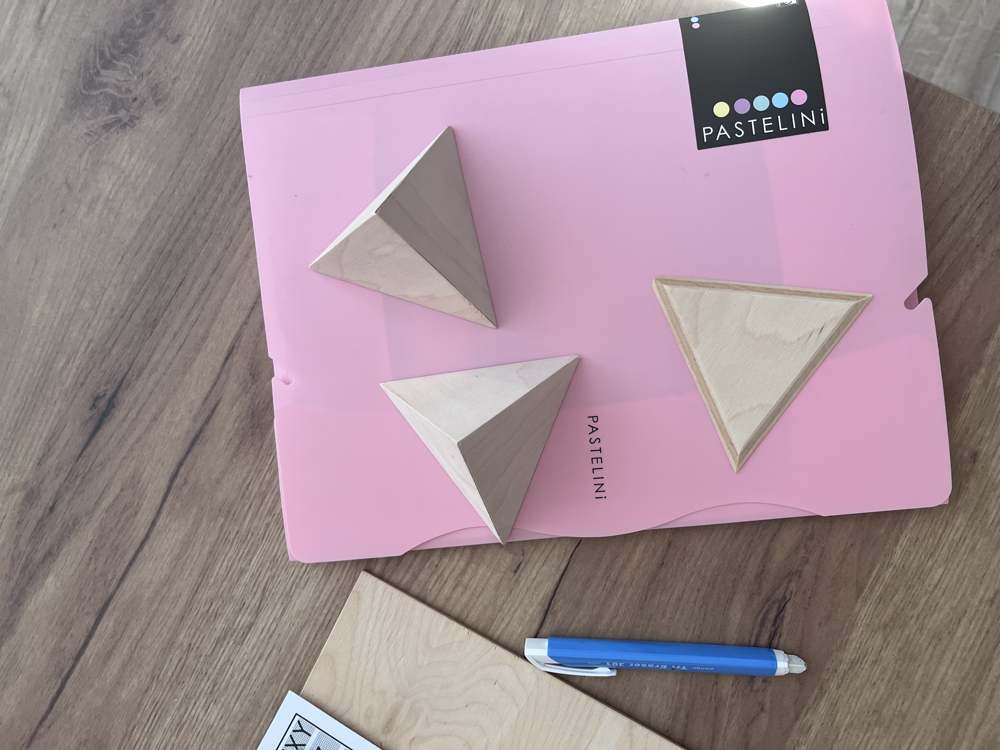

Gyermekkoromat Újrónafőn töltöttem, ahol a természet közelsége meghatározta mindennapjaimat. Sokat játszottam a szabadban, de már akkor is inkább a kreatív tevékenységek kötöttek le igazán. Csendes, visszahúzódó gyermekként mindig törekedtem arra, hogy tiszta és rendezett maradjak, a szabadtéri játékok helyett pedig gyakran választottam az olvasást, ahol új világok és ismeretlen kifejezések tárultak fel előttem. Az idegen szavak tanulása különös örömmel töltött el. Egész gyermekkorom boldogan telt, szeretetteljes környezetben, amely lehetőséget adott a belső világom fejlesztésére és a kreativitásom kibontakoztatására.
Középiskolai éveimet nagyrészt a kollégiumi élet határozta meg, ami rengeteg élményt és barátságot hozott számomra. Minden nap emberekkel voltam körülvéve, és mindig akadt valami izgalmas tevékenység, amit együtt tudtunk csinálni. A kollégium közössége egyfajta otthonná vált számomra. Bár a magam ura voltam, sosem éreztem magam egyedül, hiszen mindig volt valaki, aki ráért, és akivel együtt el tudtuk ütni az időt. Nagyon szerettem ezt a közösségi életet, ami nem csak a tanulást, hanem a közös programokat, beszélgetéseket és élményeket is jelentette.
Az egyetemi élet viszonylag új élmény számomra, és bár a kollégiumi közeg után most már albérletben élek a barátommal, ez is egy izgalmas, új fejezet. Az önállóság és a közös élet kihívásai mellett rengeteg új lehetőséggel találkozom, amelyek izgalommal töltenek el. Az egyetem tele van új kihívásokkal, amelyek próbára tesznek, de ugyanakkor számos lehetőséget is nyújt, amiket alig várok, hogy felfedezhessek. Ez az új élethelyzet egyfajta szabadságot ad, miközben folyamatosan tanulok és fejlődök.